①
②
③
정답
부분점수
| 점수 | 세부기준 |
|---|---|
| 6점~0점 | 한 문항이 맞을 때마다 부분점수 2점씩 획득 |
해설
진공차단기(VCB)
개념: 고진공 속에서 전자의 고속도 확산 원리를 이용한 차단기이다.
장점
단점
해설) 서술 암기형 / 난이도 中
하나의 수용장소에 대하여 2회선 이상의 22.9 [kV-Y] 배전선로로 공급하고 각각의 배전선로로 시설된 수전용 네트워크 변압기의 2차 측을 상시 병렬로 운전하는 방식이다.
스폿 네트워크(Spot Network) 방식의 특징
① 무정전 전력공급이 가능하다.
② 전압변동률이 낮다.
③ 공급신뢰도가 높다.
④ 부하증가에 대한 적응성이 좋다.
| 점수 | 세부기준 |
|---|---|
| 6점 | (1), (2)번이 모두 맞은 경우 6점 획득 |
| 2점 | (1)번이 맞은 경우 2점 획득 |
| 4점 | (2)번은 한 문항이 맞을 때마다 1점씩 획득 |
스폿 네트워크(Spot Network)
① 하나의 수용장소에 대하여 2회선 이상의 22.9 [kV-Y] 배전선로로 공급하며 각각의 배전선로마다 시설된 수전용 변압기의 2차 측을 항상 병렬로 운전함.
② 네트워크 변압기 용량[kVA] = $ $
③ 특징
| 설비유형 | 조명 [%] | 기타 [%] |
|---|---|---|
| A: 저압으로 수전하는 경우 | ① | ② |
| B: 고압 이상으로 수전하는 경우 | ③ | ④ |
①
②
③
④
정답
부분점수
| 점수 | 세부기준 |
|---|---|
| 4점 | 1문항을 맞힐 때마다 1점씩 획득 |
해설
[한국전기설비규정 232.3.9] 수용가 설비에서의 전압강하
다른 조건을 고려하지 않는다면 수용가 설비의 인입구로부터 기기까지의 전압강하는 다음의 표의 값 이하이어야 한다.
| 설비의 유형 | 조명[%] | 기타[%] |
|---|---|---|
| 저압 | 3 | 5 |
| 고압 이상* | 6 | 8 |
* 가능한 한 최종회로 내의 전압강하가 저압 유형의 값을 넘지 않도록 하는 것이 바람직하다.
사용자의 배선설비가 100[m]를 넘는 부분의 전압강하는 미터 당 0.005[%] 증가할 수 있으나 이러한 증가분은 0.5[%]를 넘지 않아야 한다.
다음의 경우에는 표보다 더 큰 전압강하를 허용할 수 있다.
①
②
③
④
①
②
해설) 서술 암기형 / 난이도 중
부분점수
| 점수 | 세부기준 |
|---|---|
| 6~0점 | 소문항 6개 중 정답 1개 문항당 부분점수 1점 획득 |
접근 POINT
재생에너지에 해당하는 태양광발전시스템의 장단점을 묻는 문제로 태양광 발전과 다른 재생에너지의 장단점을 함께 정리하여 암기해야 한다. 최근에는 태양광에너지 발전량을 계산하는 문제도 출제되고 있다.
해설
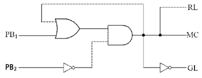
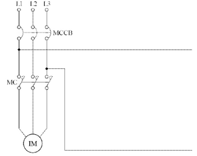
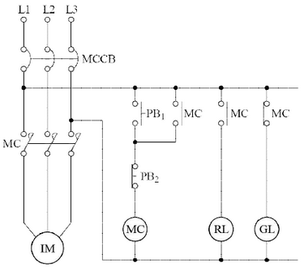
① $MC = (PB_1 + MC) $
② $RL = (PB_1 + BC) = MC $
③ $GL = (PB_1 + MC) = MC $
부분점수
| 점수 | 세부기준 |
|---|---|
| 6점 | (1), (2)번이 모두 맞은 경우 6점 획득 |
| 3점 | (1)번이 정답과 모두 일치하는 경우 3점 획득 |
| 3~0점 | (2)번의 총 3개의 소문항 중 맞은 한 문항당 1점씩 획득 |
[계산과정]
단상 변압기 1대의 용량을 \(S_1\)[kVA]라 하면, 2대를 사용하므로 총 용량은 \(2S_1\)[kVA]이다. 3상 유도전동기의 입력전력 \(P_{in}\)은 다음과 같다.
\[ P*{in} = \frac{P*{out}}{\eta} = \frac{11}{0.85} \approx 12.94[kW] \]
3상 유도전동기의 피상전력 \(S_{3\phi}\)는 다음과 같다.
\[ S*{3\phi} = \frac{P*{in}}{pf} = \frac{12.94}{0.8} \approx 16.17[kVA] \]
V결선 시 단상 변압기 1대의 피상전력은 3상 피상전력의 1/2이므로,
\[ S*1 = \frac{S*{3\phi}}{2} = \frac{16.17}{2} \approx 8.085[kVA] \]
따라서 단상 변압기 1대의 용량은 8.085[kVA] 이상이어야 한다. 주어진 표준 용량 중 8.085[kVA]보다 큰 값은 10[kVA]이다.
정답 10[kVA]
정답
[계산과정]
V결선 시 변압기 용량은 다음과 같다.
\[ 변압기 용량 = \frac{11 \times 1}{1 \times 0.85 \times 0.8} = 16.18 [kVA] \]
단상 변압기 2대를 V결선 했을 경우의 출력은 다음과 같다.
$ P_V = P_1 = 16.18$ [kVA] 이 식에서 단상 변압기 1대의 용량(\(P_1\))을 구한다.
\[ P_1 = \frac{16.18}{\sqrt{3}} = 9.34 \]
변압기 표준용량은 10[kVA]로 선정한다.
정답 10[kVA] 선정
부분점수
| 점수 | 세부기준 |
|---|---|
| 4점 | 계산과정과 정답이 모두 맞은 경우 4점 획득 |
| 0점 | 계산과정이나 정답에 오류가 있는 경우 0점 |
해설
\[ 변압기 출력[kVA] = 유도전동기 입력[kW] = \frac{\text{유도전동기 입력[kVA]}}{\text{역률} \times \text{효율}} \]
V결선 시 변압기 용량은 단상 변압기 용량의 \(\sqrt{3}\) 배인 것을 주의해야 한다.
[배점: 4점]
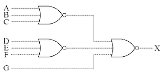
해설) 논리회로 / 난이도 中
정답
\[ (1) X = \overline{(A+B+C) + (D+E+F) + G} = (A+B+C) \cdot (D+E+F) \cdot \overline{G} \]
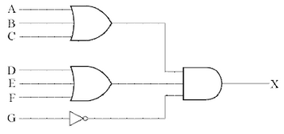
부분점수
| 점수 | 세부기준 |
|---|---|
| 4점 | (1), (2)번이 모두 맞은 경우 4점 획득 |
| 2점 | (1), (2)번 중 한 문항만 맞은 경우 2점 획득 |
[조건]
[계산과정]
정답
[계산과정]
\[ e = V_s - V_r = 6,600 - 6,000 = 600 [V] \]
\[ P = \frac{e V_r}{R + X \tan\theta} = \frac{(6,600 - 6,000) \times 6,000}{1.4 + 1.8 \times \frac{0.6}{0.8}} \times 10^{-3} = 1,309.09 [kW] \]
정답 1,309.09 [kW]
부분점수
| 점수 | 세부기준 |
|---|---|
| 4점 | 계산과정과 정답에 오류가 없는 경우 4점 획득 |
| 0점 | 계산과정과 정답에 오류가 있는 경우 0점 |
해설
전압강하 공식: $e = (R + X ) $
전력구하는 식으로 변형하면: $P = $
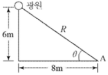
[계산과정]
완전 확산 광원이므로, 광도는 전광속을 4 \(\pi\) 로 나눈 값과 같습니다.
\[ I = \frac{\Phi}{4\pi} = \frac{18500}{4\pi} \approx 1472 \, cd \]
정답 약 1472 cd
[계산과정]
A점과 광원 사이의 거리 R은 피타고라스 정리에 의해 다음과 같이 계산됩니다.
\[ R = \sqrt{6^2 + 8^2} = \sqrt{36 + 64} = \sqrt{100} = 10 \, m \]
조도 E는 다음 공식으로 계산됩니다.
\[ E = \frac{I \cos\theta}{R^2} \]
여기서 \(\theta\)는 광원에서 A점까지의 선과 수직면 사이의 각도입니다. 그림에서 \(\cos\theta = \frac{6}{10} = 0.6\) 입니다.
따라서, A점에서의 수평면 조도는 다음과 같습니다.
\[ E = \frac{1472 \times 0.6}{10^2} = \frac{883.2}{100} = 8.832 \, lx \]
정답 약 8.83 lx
해설) 복합 계산형 / 난이도 中
[계산과정]
\[ I = \frac{F}{\omega} = \frac{18,500}{4\pi} = 1,472.18 \text{[cd]} \]
정답 1,472.18[cd]
[계산과정]
\[ E_h = \frac{I}{R^2} \cos(90^\circ - \theta) = \frac{1,472.18}{(\sqrt{6^2 + 8^2})^2} \times \frac{6}{\sqrt{6^2 + 8^2}} = 8.83 \text{[lx]} \]
정답 8.83[lx]
| 점수 | 세부기준 |
|---|---|
| 6점 | (1), (2)번이 모두 맞은 경우 6점 획득 |
| 3점 | (1), (2)번 중 한 문항만 맞은 경우 3점 획득 |
광원의 크기보다 10배 이상의 거리에서 광도나 조도를 계산할 때에는 광원을 점광원으로 보고 계산해도 된다.
조건:
부하 정보:
| 부하명 | 전등전력 | 일반동력 | 하절기 냉방동력 | 동절기 난방동력 |
|---|---|---|---|---|
| 설비용량 | 100 [kW] | 250 [kW] | 140 [kW] | 60 [kW] |
| 수용률 | 70 [%] | 50 [%] | 80 [%] | 60 [%] |
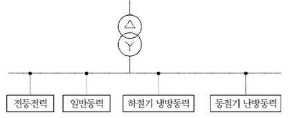
계산과정:
최대 부하량 계산: 70[kW] + 125[kW] + max(112[kW], 36[kW]) = 70 + 125 + 112 = 307[kW]
부등률을 고려한 종합 부하량 계산: 307[kW] \(\times\) 1.35 = 414.45[kW]
역률을 고려한 피상전력 계산: 414.45[kW] / 0.9 = 460.5[kVA]
여유도를 고려한 변압기 용량 계산: 460.5[kVA] \(\times\) (1 + 0.15) = 529.575[kVA]
표준 용량에서 가장 가까운 값 선택: 500[kVA]
정답: 500 [kVA]
(난이도: 중) 단순 수식형 문제입니다.
변압기의 용량 (\(Q_T\))는 다음과 같이 계산됩니다.
\[ Q_T \text{(변압기의 용량)} \ge \frac{(100 \times 0.7 + 250 \times 0.5 + 140 \times 0.8)}{1.35 \times 0.9} \times (1 + 0.15) \]
\[ Q_T = 290.576 \approx 290.58 \text{ [kVA]} \]
300[kVA] 선정
| 점수 | 세부 기준 |
|---|---|
| 4점 | 계산 과정과 정답이 모두 맞는 경우 |
| 0점 | 정답이 틀리거나 계산 과정에 오류가 있는 경우 |
이 문제는 변압기의 표준 용량 선정 문제입니다. 합성 최대 전력을 구한 후, 그보다 큰 용량을 선택하면 됩니다. 합성 최대 전력은 설비 용량에 수용률을 곱하고, 부등률과 역률로 나눈 후 여유도를 포함하여 계산할 수 있습니다. 이 문제에서는 계절성 설비인 냉방 동력과 난방 동력 중 큰 값만을 계산하면 됩니다.
\[ 변압기의 용량 \ge 합성 최대 전력 \]
\[ \frac{\sum(\text{설비용량}[kW] \times \text{수용률})}{\text{부등률} \times \text{역률}} \times (1 + \text{여유도}) \text{[kVA]} \]
주어진 공식을 통해 구하면 됩니다. 주의할 점은 여유도는 100%에 추가되는 값이므로, 계산할 때는 \((1 + \text{여유도}[\%] / 100)\)으로 계산해야 합니다. 이 문제의 경우 여유도는 15%이므로 1.15를 사용하여 계산하면 됩니다.
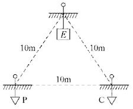
① 측정 계기:
② 측정방법의 명칭:
해설: 단답 암기형+단순 계산형 / 난이도 下
① 측정계기: 어스테스터(접지저항 측정기)
② 측정방법의 명칭: 콜라우시 브리지에 의한 3극 접지저항 측정법
[계산과정] $R_E = (86 + 92 - 160) = 9 [] $
정답 9[Ω]
부분점수
| 점수 | 세부기준 |
|---|---|
| 6점 | (1), (2)가 모두 정답인 경우 6점 획득 |
| 3점 | (1), (2) 중 한 문항만 맞으면 3점 획득 |
접근 POINT
응용되어 출제되지 않으므로 기본 개념과 공식을 숙지하면 풀 수 있는 문제이다.
해설
콜라우시 브리지법(접지저항 측정법)
접지저항을 측정하고자 할 경우 두 개의 10[m] 이상 이격된 보조전극을 활용하여 측정하는 방법이다.
① $Ra + R_b = R{ab} $
② $Rb + R_c = R{bc} $
③ $Rc + R_a = R{ca} $
①+②+③을 한다.
\[ 2(R*a + R_b + R_c) = (R*{ab} + R*{bc} + R*{ca}) 에서 \]
\[ 2(R*a + R*{bc}) = (R*{ab} + R*{bc} + R*{ca}) 이 되며, 정리하면 R_a = \frac{1}{2}(R*{ab} + R*{ca} - R*{bc}) \]
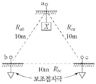
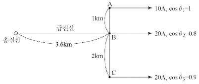
[계산과정]
[계산과정]
[계산과정]
\[ I = 10 + 20(0.8 - j0.6) + 20(0.9 - j\sqrt{1 - 0.9^2}) \]
\[ = 44 - j20.72 = 48.63\angle{-25.22^\circ} \]
정답 48.63 [A]
[계산과정]
\[ P_t = 3 \times 48.63^2 \times (0.5 \times 3.6) + 3 \times 10^2 \times (0.5 \times 1) + 3 \times 20^2 \times (0.5 \times 2) \]
\[ = 14,120.34 [W] = 14.12 [kW] \]
정답 14.12 [kW]
부분점수
| 점수 | 세부기준 |
|---|---|
| 6점 | 문항 (1), (2)의 계산과정과 답이 모두 맞은 경우 6점 획득 |
| 3점 | 문항 (1) 또는 (2) 하나의 계산과정과 답이 맞은 경우 3점 획득 |
접근 POINT
역률이 다른 전류나 전력을 합성할 때는 유효분과 무효분으로 나누어서 합성해야 한다.
해설
급전선에는 세 전류의 합성전류가 흐른다.
역률 \(\cos\theta\)인 지상전류 표현식은 다음과 같다.
\[ I = I(\cos\theta - j\sin\theta) = I(\cos\theta - j\sqrt{1 - \cos^2\theta}) [A] \]
선로 손실식은 다음과 같다.
\[ P_t = 3I^2R = 3\left(\frac{P}{\sqrt{3}V\cos\theta}\right)^2 R = 3\frac{P^2R}{3V^2\cos^2\theta} = \frac{P^2R}{V^2\cos^2\theta} \]
①
②
[계산과정]
해설) 서술 암기형+단답 암기형+단순 계산형 / 난이도 중
유도성 부하를 사용하면 지상 전류가 흐르고 역률이 저하되는데, 이것을 개선하기 위해 부하에 병렬로 콘덴서(용량성)를 설치하여 진상 전류를 흘려 줌으로써 무효전력을 감소시켜 역률을 개선한다.
① 전력손실 증대, ② 전기요금 증가
전력용 콘덴서의 용량 계산
[계산과정]
\[ Q_c = 30 \times \left( \frac{\sqrt{1 - 0.65^2}}{0.65} - \frac{\sqrt{1 - 0.9^2}}{0.9} \right) = 20.544 \dots \approx 20.54 [kVA] \]
정답 20.54 [kVA]
| 점수 | 세부기준 |
|---|---|
| 6점 | (1), (2), (3)번이 계산과정을 포함하여 모두 맞은 경우 |
| 2점 | (1), (2), (3)번 중 한 문항만 맞으면 2점 획득 |
다음 핵심 KEYWORD가 포함되어야 정답 처리된다.
유도성 부하, 지상 전류, 병렬(진상용, 전력용)콘덴서, 진상 전류, 무효전력 감소
전력손실, 전기요금
역률 개선의 원리와 개선함으로써 얻어지는 이점이 무엇인지를 아는가를 묻는 문제이며, 실제로 개선 전 역률과 개선 후 역률을 이용하여 필요한 전력용 콘덴서의 용량을 구하기 위해서는 무효전력의 차이를 통해서 구할 수 있다.
전력용 콘덴서의 용량은 개선 전 무효전력 \(Q_1\) 과 개선 후 무효전력 \(Q_2\) 의 차
\[ Q_c = Q_1 - Q_2 = P(\tan\theta_1 - \tan\theta_2) = P \left( \frac{\sin\theta_1}{\cos\theta_1} - \frac{\sin\theta_2}{\cos\theta_2} \right) \]
$ Q_c: 전력용 콘덴서의 용량[kVA], P: 부하설비 용량[kW], $ $ _1: 개선 전 역률, _1: 개선 전 무효율, $ $ _2: 개선 후 역률, _2: 개선 후 무효율 $
일반적으로 우리가 전기를 이용하여 일을 얻는 대부분의 기기들은 전동기를 사용하며, 전동기는 철심에 코일을 감아서 만들어지므로 유도성 부하(L, 리액터, 코일)이다. 유도성 부하에는 위상이 뒤쳐진 지상 전류가 흐르고 이에 따른 지상 무효전력으로 인해 역률이 저하된다. 이것을 개선하기 위해 부하에 병렬로 콘덴서(용량성)를 설치하여 진상 전류를 흐르게 하고 진상 무효전력을 공급하여 지상 무효전력을 감소시킴으로써 역률을 개선하는 것이다.
전력에는 피상전력 \(P_a\)[VA], 유효전력 P[W], 무효전력 \(P_r\) 또는 Q[var] 3가지가 있는데, 복소수의 개념이 적용되어, \(P_a = P + jQ, |P_a| = \sqrt{P^2 + Q^2}\) 가 되며, 직각삼각형을 이용하여 관계를 나타낸다.
\[ 유효전력 P = P_a \cos\theta, 무효전력 Q = P_a \sin\theta, 역률 \cos\theta = \frac{P}{P_a}, 무효율 \sin\theta = \frac{Q}{P_a} \]
피상전력은 한전에서 수용가에 공급하는 전력이며, 유효전력은 수용가에서 실제 일하는 전력이다. 전기요금은 수용가에서 사용한 유효전력량[kWh]에 대한 요금을 내게 되는데, 한전은 수용가의 수변전설비의 역률을 주기적으로 측정하여 시설에서 평균적으로 유지해야 하는 역률의 범위를 지정하고 있다. 만약에 평균보다 월등히 높은 역률을 유지한다면 전기요금에 대한 할인을 낮은 역률을 유지한다면 전기요금에 대한 할증을 적용한다.
일반적인 건물들은 시설관리를 통하여 적당한 역률만을 유지하고 있다. 결국 역률이 저하되는 것은 전력손실이 증대되는 효과와 더불어 적정값보다 낮은 역률이 된다면 전기요금에 대한 할증을 받아 전기요금이 증대된다.
무효전력은 개선 전보다 개선 후가 작아지므로 개선 전의 무효전력에서 개선 후의 무효전력을 뺀 값으로 정해진다.
\[ Q_c = P(\tan\theta_1 - \tan\theta_2) = P \left( \frac{\sqrt{1 - \cos^2\theta_1}}{\cos\theta_1} - \frac{\sqrt{1 - \cos^2\theta_2}}{\cos\theta_2} \right) \]
[조건]
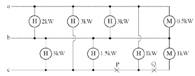
[계산과정]
[계산과정]
30[%]
그림의 설비 불평형률[%] 계산
[계산과정]
\[ 설비 불평형률 = \frac{5.75 - 4}{(5.63 + 5.75 + 4) \times \frac{1}{3}} \times 100 [%] = 34.14 [%] \]
정답 34.14[%]
[계산과정]
\[ 설비 불평형률 = \frac{5.63 - 3}{(5.63 + 4.5 + 3) \times \frac{1}{3}} \times 100 [%] = 60.09 [%] \]
정답 60.09[%]
| 점수 | 세부기준 |
|---|---|
| 5점 | (1), (2), (3)번이 모두 맞은 경우 5점 획득 |
| 4점 | (2), (3)번은 한 문항이 맞을 때마다 2점씩 획득 |
| 1점 | (1)번이 맞은 경우 1점 획득 |
3상 3선식의 경우 설비불평형률은 30[%] 이하가 되도록 하여야 한다.
그림의 설비 불평형률[%] 계산
\[ P*{ab} = \frac{2+3}{1} + \frac{3+0.5}{1} = 5.63 [kVA], P*{bc} = \frac{3}{1} + \frac{1.5}{1} + \frac{1}{0.8} = 5.75 [kVA] \]
$ P*{ca} = + = 4 [kVA]$ 단상부하 최대 \(P*{bc}\) 와 최소 \(P_{ca}\) 의 차를 분자에 이용
\[ P*{ab} = \frac{2+3}{1} + \frac{3+0.5}{1} = 5.63 [kVA] P*{bc} = \frac{3}{1} + \frac{1.5}{1} = 4.5 [kVA] \]
$ P*{ca}$ = 3 [kVA] 단상부하 최대 \(P*{ab}\) 와 최소 \(P_{ca}\) 의 차를 분자에 이용
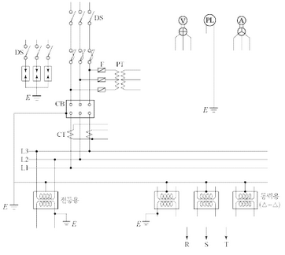
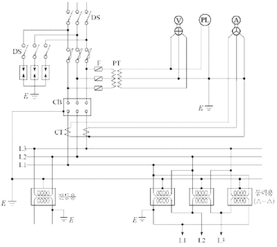
부분점수
| 점수 | 세부기준 |
|---|---|
| 12점 | (1), (2), (3), (4)번이 모두 맞은 경우 12점 획득 |
| 3점 | (1), (2), (3), (4)번 중 한 문항이 맞을 때마다 3점씩 획득 |
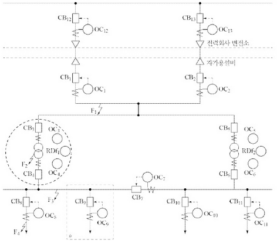
| 사고점 | 주 보호 | 후비 보호 |
|---|---|---|
| \(F_1\) | \(OC_1 + CB_1 And OC_2 + CB_2\) | \(OC_1 + CB_1 And OC_2 + CB_2\) |
| \(F_2\) | \(OC_3 + CB_3 And OC_4 + CB_4\) | \(OC_1 + CB_1 And OC_2 + CB_2\) |
| \(F_3\) | \(OC_4 + CB_4 And OC_7 + CB_7\) | \(OC_3 + CB_3 And OC_6 + CB_6\) |
| \(F_4\) | \(OC_8 + CB_8\) | \(OC_4 + CB_4 And OC_7 + CB_7\) |
정답 ①~④ (표에 기입)
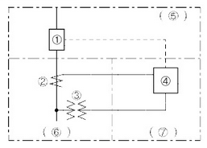
① ( )
② ( )
③ ( )
④ ( )
⑤ 검출부
⑥ 판정부
⑦ 동작부
① ( )
② ( )
③ ( )
해설: 단답 암기형 + 도면 완성 / 난이도 상
① $OC{12} + CB{12} And OC{13} + CB{13} $
② $RDF_1 + OC_4 + CB_4 And OC_3 + CB_3 $
① 교류 차단기, ② 변류기, ③ 계기용 변압기, ④ 과전류 계전기, ⑤ 동작부, ⑥ 검출부, ⑦ 판정부
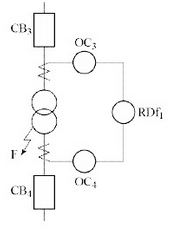
① 과전류 계전기
② 과전압 계전기
③ 부족전압 계전기
④ 주파수 계전기
⑤ 비율차동 계전기
| 점수 | 세부 기준 |
|---|---|
| 15점 | (1)~(4)번이 모두 맞은 경우 15점 획득 |
| 4~0점 | 문항 (1)의 소문항 ①, ② 정답 하나당 부분점수 2점씩 부여 |
| 5~0점 | 문항 (2)의 정답 개수가 1~2개면 1점, 3~4개면 2점, 5~6개면 4점, 7개면 5점 |
| 3점 | 문항 (3)의 단선도가 정답이면 3점, 오류가 있으면 0점 |
| 3~0점 | 문항 (4)의 정답 개수당 1점씩 부분점수 획득 |
주보호와 후비보호의 개념에 관한 문제이다.
주보호는 사고 발생 시 가장 먼저 고장을 제거하는 시스템으로서 사고점과 전원측 사이에 위치한 가장 인접한 계전기와 차단기가 수행한다. 후비보호는 주보호가 차단에 실패하였을 때 일정 시간 경과 후 고장을 제거할 수 있는 백업(Back-up) 시스템을 의미하고 이는 보호협조의 원리가 된다.
[보호계전기의 목적]
① 전력 공급 신뢰도 향상, ② 고장 파급 방지, ③ 사고복구 신속화
[보호계전 시스템의 구성]
① 검출부: 전력계통의 전압, 전류의 전기적 상태를 검출하는 역할 (CT, PT를 이용하여 검출)
② 판정부: 검출부에서 검출한 전기적 상태를 통해 계통의 이상여부 판정
③ 동작부: 판정부의 신호에 의해 사고구간을 분리 및 제거
[주보호와 후비 보호]
① 주보호의 정의: 사고 발생 시 고장구간을 최소범위로 한정하고 제거하기 위한 1차적 보호 방식
② 후비보호의 정의: 주보호가 실패했을 경우 또는 보호할 수 없을 경우에 일정한 시간을 두고 동작하는 백업 계전 방식